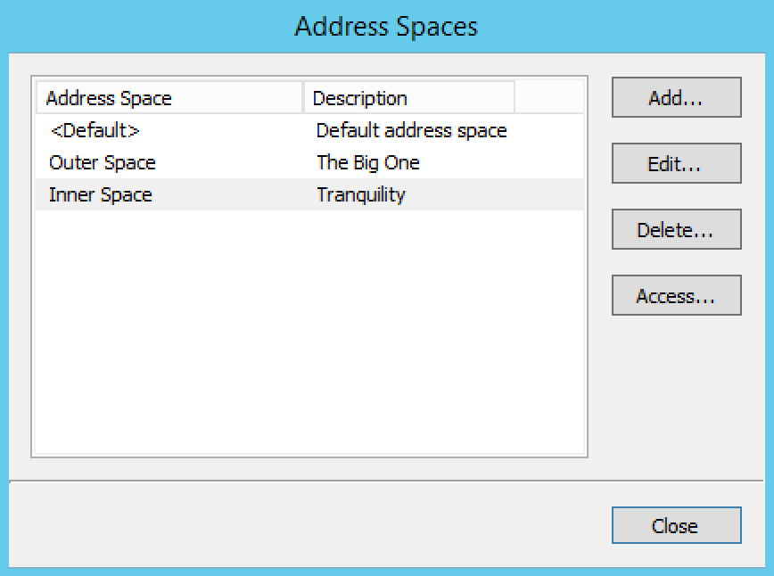

Address Space Management - (Management Console, obsolete)
The Address Space Management dialog box allows you to create, modify, or delete address spaces as well as set access privileges for existing address spaces. To access the Address Space Management dialog box, you must be logged in as the administrator user.
To open the Address Space Management dialog box, from the Tools menu, select Define Address Spaces.
{kind=link}
To create a new address space, click the Add button and enter the name and description for the address space. NOTE: When more than one address space is defined, the first address space will be named <default>. It is not possible to rename or delete the <default> address space. Also, the <default> address space is the only address space that shows AD sites if AD Site and Subnet integration is enabled. NOTE: When a new address space is created, you must set the access for the address space to allow users to access it. When creating your first address space, two address spaces will actually be created, the <default> address space and the address space you created. You must set access for the <default> address space as well as for the new address space.
To change the name or description for an address space, select the address space and click the Edit button.
To delete an address space, select the address space and click the Delete button.
Danger
When you delete an address space, all objects contained within the address space are removed (DNS servers, DHCP servers, IP Address ranges, IP Address entries and folders). This action is not undoable.
Note
You cannot delete the <default> address space or the address space you are currently working in.
To set access privileges for an address space, select the address space and click the Access button.
Moving Objects to a Different Address Space
DNS servers, DHCP servers, IP Address ranges and individual IP Address entries can be moved between address spaces. When an object is moved between address spaces, all properties for the object are retained, including its access settings and change history. You must have the relevant administrator privileges to move objects do a different address space.
Note
You cannot move folders between address spaces. Individual DHCP scopes cannot be moved between address spaces, but when you move a DHCP server to a different address space, all of its DHCP scopes are moved as well. Likewise, you cannot move individual DNS zones to a different address space, but moving a DNS server to a different address space will move all of its zones as well.